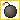

Utilisez les flèches directionnelles pour déplacer votre personnage.
Utilisez la barre espace pour poser une bombe.
Vos bombes peuvent servir à tuer les monstres, à détruire certains murs mais elles peuvent aussi vous enlever une vie si vous êtes trop proche de l'explosion.

Ramassez la nourriture qui se trouve sur la map afin de réussir le niveau. Vous allez devoir ramasser :
des si vous avez choisi Donald Trump
des si vous avez choisi Vladimir Putin
des si vous avez choisi Angela Merkel
des si vous avez choisi Xi Jinping
Une fois toute la nourriture ramassée, vous devez atteindre le portail afin de passer au niveau suivant.
Lors du dernier niveau, vous devrez vous emparez du trophée une fois toute la nourriture ramassé et ceci en faisant le moins de temps possible